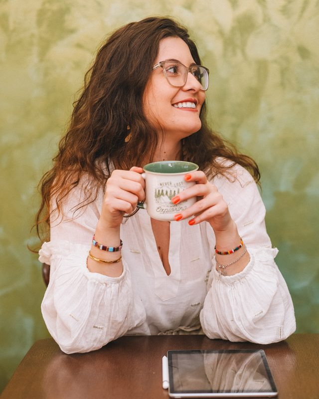
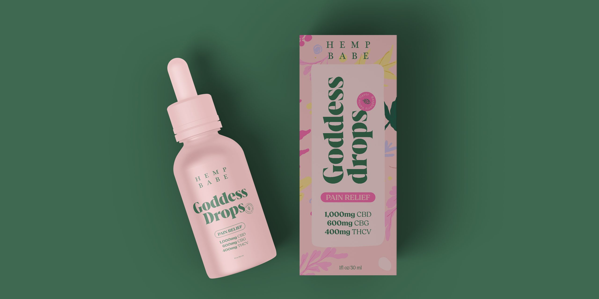

High standards, without the burnout
High standards are why clients come back. They're also why so many studio owners burn out. The problem isn't the standard, it's where it lives.

By Julia Sonda · · 3 min read
If you run a small studio or agency, there's a good chance your standards are the reason clients stay. You notice the uneven spacing. You redo the mockup when the shadow looks fake. You won't send a file with a layer called “Copy of copy of final 2”.
Those same standards are often why studio owners burn out, usually because they only exist in your head, and you can only be in one project at a time.
I run a small studio myself, and I also work inside other agencies' processes, so I get to see what keeps quality high and what just keeps people tired. Here's what seems to make the difference.
Write your standards down
Quality that only exists in your head can't be shared. So the first step is boring and incredibly useful: write down what “ready to send” means in your studio.
It doesn't need to be a manual. A one-page checklist is enough to start:
- Spelling, names and dates checked against the brief.
- Spacing and alignment checked at 100% zoom, not just at fit-to-screen.
- Mockups that look real, with consistent lighting and scale.
- Files named and organized the way your studio always does it.
- Exports in the formats the client actually asked for.
Once it's on paper, anyone working with you, a junior, a freelancer or an outside designer, can meet it. And you stop being the only safety net.
Separate direction from production
Most of the quality in a design project is decided early. The concept, the typography, the feeling of the whole thing. Those decisions deserve your best hours.
The rest is production: adapting the layout to every format, building out the slides, preparing print files, applying the brand to twenty pieces. It still needs care, but it doesn't need you. When studio owners do all of it themselves, the direction gets their tired leftovers.
So keep the direction close and hand over production first. It's the change that gives the most energy back for the least risk.
Review early, not just at the end
The most exhausting way to protect quality is to discover at the final review that the whole thing went in the wrong direction. Then you're redesigning at midnight.
Build two or three check-ins into every project instead. A quick look at the direction before anything is polished. A look halfway. A final pass for details. Each one takes about ten minutes and can save you a late night.
Protect the hours that matter
A lot of the exhaustion comes from constant interruptions, more than from the design itself. A few habits that help:
- Block time for creative work and treat it like a client meeting. Nobody books over it.
- Answer messages in windows, not the second they arrive. Clients adapt surprisingly fast when you tell them when to expect a reply.
- Batch your feedback. One focused review of everything beats fifteen small ones scattered through the day.
Say “not this month” more often
Not every no has to be a no. “I can start this on the 15th” protects your current clients, your standards and your evenings, and most people are fine with it. When a client truly needs it sooner, that's what a rush fee is for.
Templates aren't the enemy of craft
Some designers feel that templates and systems make the work less creative. In my experience it's the opposite. A presentation template, a standard folder structure, a reusable proposal and a project kickoff checklist save the energy for the parts that deserve it.
Get help before you desperately need it
The worst time to find a designer you trust is during your busiest week. You won't have time to brief them properly, and the first project will feel harder than it should.
If you can, start in a calmer month. Give an outside designer one real but contained project, see how they work with your checklist, and build the relationship before the busy season arrives. Then, when it does, you already have someone who knows how your studio does things.
I can leave ALL of my social media to her and focus on the other parts of my business.
That's really the goal: spending your own hours on the work only you can do. If you're wondering what that could look like in your studio, I wrote about the signs it's time to get help and what to delegate first. Or just send me a message and tell me what your week looks like right now.